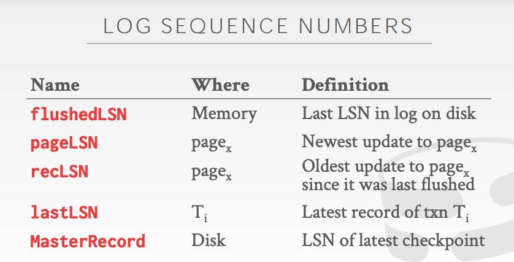

CMU DB Database Logging & Crash Recovery
在这里Logging的主要用途就是为了事务故障恢复，所以就把两者放在一起写吧，关联性还是蛮强的。
为了能让事务进行故障恢复，在事务进行的时候有两类写入策略，这两个策略可以进一步组合起来： a. Steal Policy: 对于uncommitted txn是否可以把内容写到磁盘上（这里说的磁盘就是是数据文件） b. Force Policy: 对于那些committed txn是否一定要把内容写回到数据文件上
这两个策略策略可以进行交叉，组合成为常用的两种策略：No-Steal + Force 或者是 Steal + No-Force. 对于No-Steal + Force来说，对于进行的事务事务需要单独地copy page(shadow paging)出来修改(no-steal)，直到提交的时候必须刷入到磁盘上(Force). 可以看到这copy page这个操作是比较费的，并且提交事务的时候需要修改许多东西，把BTree的root指向这个带有written page的节点。课程说到，在2010年之前SQLite就是这么做的，但是现在也不这么做了。但是这么做有个好处就是恢复会非常快速，因为脏数据都没有写入到数据文件中，不涉及任何回滚操作。Andy在课程里面还提到，在1970年在波多黎各运行的某个数据库就是这么实现的，因为运行的环境每一个小时就会断电一次。
现代数据库系统通常使用Steal + No-Force的组合方式，配合实现就是WAL. WAL要记录每个txn的开始和结束(abort/commit), 然后每次操作需要记录(txn-id, obj-id, old-value, new-value). old-value是用来做undo操作的，new-value则用来做redo操作。这种记录类似于MySQL里面的row-format, 其实还有sql-format(SQL层面的)或者是hybrid-format(row + sql format) . tradeoff就是详细的偏物理层面的格式体积就大，偏逻辑层面的格式体积就小但是准确性不好。WAL和txn之间需要配合刷盘，ideally WAL应该完全flush到disk上之后txn才能回复client是否commit/abort, 但是可能这样性能就不好。所以常见策略就是interval + size threshold混合判断，另外可以使用group commit让多个txn的WAL一起flush下去（leveldb里面对多个table的WAL也是会放在一起flush）。光有WAL不行，出现故障恢复回放全量WAL的话肯定是不行的，所以需要做checkpoint. checkpoint事件可以和txn op一起写入到WAL中.
几乎所有的系统使用的 ARIES 算法做Crash Recovery. ARIES: a transaction recovery method supporting fine-granularity locking and partial rollbacks using write-ahead logging: ACM Transactions on Database Systems: Vol 17, No 1. 它的大致步骤有三个：a. 运行时使用WAL进行记录 b. 回放redo-log将数据库状态恢复到crash之前 c. 回放undo-log取消那些没有提交的事务。 其实a点没有问题，bc两点问题在于要回放什么范围的redo-log/undo-log.
为了能用ARIES，我们在WAL上还需要引入LSN(log sequence number)这个东西，而且这个东西还不仅仅是在WAL里面使用，还需要记录在Page以及其他地方维护：page写入到磁盘之前必须保证 pageLSN <= flushedLSN. 关于commit/abort的具体操作这里就不写了。

理论上Checkpoint内部数据必须是完全一致的，但是这样会阻塞其他事务，所以常使用fuzzy checkpoint的技术。简单地说就是内部数据可能不一致，所以不能用来走replica, 但是却可以用来进行恢复。做Fuzzy ckpt的时候，不仅仅需要数据备份之外，还需要记录当前正在运行那些txn(ATT, Active Txn Table)以及哪些page被改写了(DPT, Dirty Page Table, recLSN > ckpt LSN). 这样在恢复的时候需要对这些ATT以及DPT做特殊处理。
恢复过程分为3个部分，我这里记录不是特别详细，很多细节也不是特别确定：
- analysis phase. 逆序寻找WAL中最后一个checkpoint end的点，并且找到DPT，并且记录哪些txn是处于未知状态的，放入ATT.
- redo phase. 从DPT里面每个dirty page的rec LSN开始回放每个page的redo log, 然后将这些txn从ATT中移除，认为这些txn已经完全执行完成
- undo phase. 执行每个ATT里面的undo-log, 直到lastLSN.
总之过程不是特别复杂，但是边角的地方必须考虑清楚。